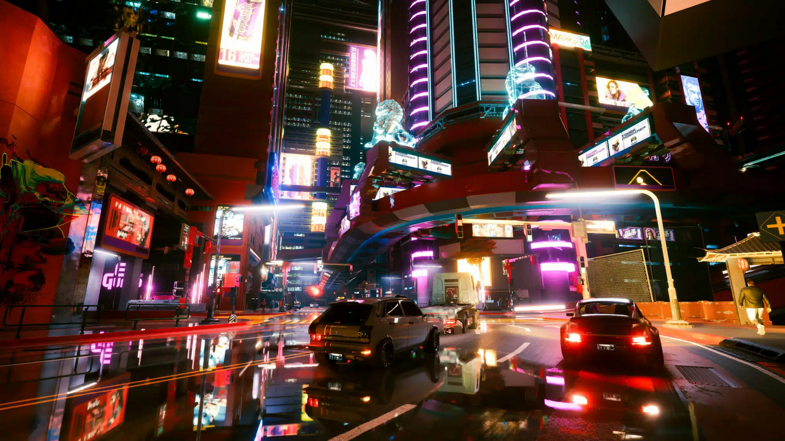

计算机图形学
第二章(1) 图形学编程概述
三十年视觉的革命
1996年: 《雷神之锤》
2023年: 《赛博朋克2077》
驱动这场革命的，不仅是硬件的进步，更是我们与GPU“对话”的编程思想的根本变革。
课程目标
- 回顾历史: 从固定管线到可编程管线的编程思想革命
如何设计一个“绘图API”？
方案A: “保姆式”API
// 简单易用，一步到位
drawSphere({
position: [0,0,0],
radius: 1.0,
color: [1,0,0],
lighting: true
});
优点: 简单
缺点: 功能固化, 不灵活
方案B: “DIY式”API
// 复杂但灵活
let buffer = createBuffer(sphere_data);
let shader = createShader(shading_code);
setShader(shader);
setBuffer(buffer);
draw();
优点: 灵活, 高性能
缺点: 复杂, 学习曲线陡
这两种方案的取舍，完美复现了OpenGL自身的发展史。
第一部分: 图形API的演进
传统OpenGL: “固定功能管线”时代
核心思想: 你告诉GPU要画什么，GPU知道该怎么画。
类比: 功能强大的“微波炉”，你只需按“爆米花”键，无法控制加热细节。
| 年代 | 事件和节点 |
|---|---|
| 1960-1970年代 | 计算机图形学诞生，CPU负责所有图形渲染任务。 |
| 1980年代 | 专用图形硬件出现（如Amiga图形芯片），加速部分图形任务。 |
| 1995年 | 3dfx Voodoo Graphics发布，GPU开始分担三维图形渲染任务。 |
| 1999年 | NVIDIA GeForce 256发布，GPU接管几何计算任务，正式定义GPU。 |
| 2001年 | 可编程着色器出现，GPU从固定功能设备转变为可编程硬件。 |
| 2006年 | CUDA发布，GPU开始用于通用计算任务。 |
| 2018年 | NVIDIA RTX系列发布，GPU支持实时光线追踪。 |
传统OpenGL: “固定功能管线”时代
- OpenGL最初由建筑评审委员会(Architectural Review Board, ARB)所控制，其成员包括了SGI, Microsoft, NVidia, HP, 3DLabs, IBM等，目前OpenGL由Khronos Group所负责
- OpenGL的版本在2.5以前发展基本稳定，具有良好的版本向下兼容性
- 版本的发展主要为体现新的硬件技术进步，如支持三维纹理映射、纹理对象、顶点和面片程序等，并能通过扩展提供为特定硬件平台的支持
- OpenGL 2.0版本引入了可编程着色器的概念，允许用户编写自己的顶点和片元着色器程序
传统OpenGL: “固定功能管线”时代

现代OpenGL: “着色器核心”时代
GPU越来越强大，开发者希望能获得更多对底层的控制权，实现更多更具创造力的视觉效果
卡通渲染
体积光渲染
非真实感渲染
思想转变: 从“配置机器”到“为机器编程”
现代OpenGL: “着色器核心”时代
核心思想: 你给GPU提供数据(缓冲)和程序(着色器)，让它自己计算结果。
类比: 你得到了微波炉的核心零件(计算单元)和一本编程手册(GLSL)，可以实现任何烹饪方式。
现代OpenGL: “着色器核心”时代
- 当代OpenGL的性能主要是通过GPU实现，通过对着色器编程实现对GPU的控制
- 应用程序的任务是往GPU传递数据，GPU会负责所有的渲染工作

现代OpenGL: “着色器核心”时代
图形渲染的两种模式
所有的模型均以顶点表示，顶点可构成基本图元，如线段、多边形、曲线、曲面等
- 即时模式
- 应用程序定义每个顶点都会立即送到GPU中渲染，这种实现会造成CPU和GPU之间数据传输的瓶颈，在OpenGL3.1及以后的版本和OpenGL ES 2.0中删去
- 保有模式
- 所有顶点及其属性均保存在数组中，将数组传送给GPU进行渲染，但若需要更新，则需更新所有数组中的内容并再次传递给GPU。对于重复渲染，传递数组并储存在GPU中的方式显然效率更高
现代OpenGL: “着色器核心”时代
OpenGL3.1
- OpenGL3.1版本完全基于着色器，并未提供默认的着色器程序，每个应用程序均需提供点元着色器和面片着色器程序
- 不再提供即时模式，并减少了状态变量的数目
- 不再提供对于大部分2.5版本函数的支持，也不再需要向下兼容，但还是存在兼容性扩展
现代OpenGL: “着色器核心”时代
其它版本
API的未来
- Vulkan, Metal, DirectX 12等
- 更底层，更接近硬件,将更多的控制权（如内存管理、多线程）交给开发者，以追求极致的性能
- 但其核心编程思想一脉相承：数据 + 程序(着色器)
课程总结
- 理解了 现代图形API的设计思想。
- 比较了 不同类型API的功能特点。